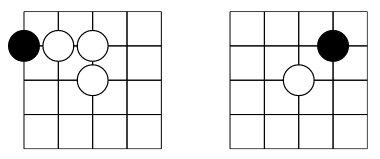

Two players sit on opposite sides of a go board and take turns.
A Phutball game begins with a single black stone, or the ball, placed at the center intersection of a rectangular grid. On each turn, a player may either:
- Place a white stone on any vacant intersection, or
- Perform a sequence of jumps.
To jump, the ball must be adjacent to one or more white stones. It is moved in a horizontal, vertical, or diagonal to the first vacant intersection beyond one or a sequence of white stones, the jumped white stones are then removed. If a jump is performed, the same player may continue jumping as long as the ball continues to be adjacent to at least one white stone, or may end the turn at any point. Jumping is not obligatory.
The game is over when a jump sequence ends on or over the edge of the board closest to the opponent (the opponent’s goal line) at which point the player who performed the jumps wins. It is legal for a jump sequence to step onto but not over one’s own goal line.
The game was created by John Conway, also creator of Fractran.